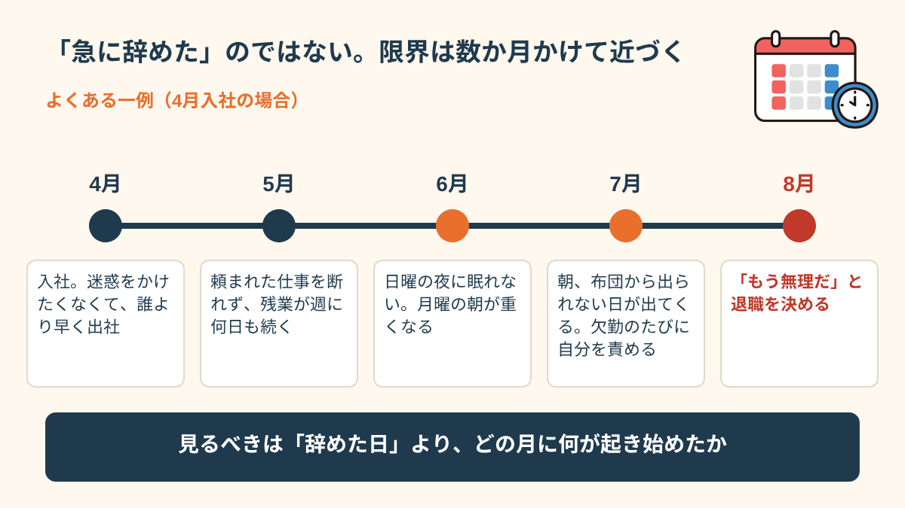
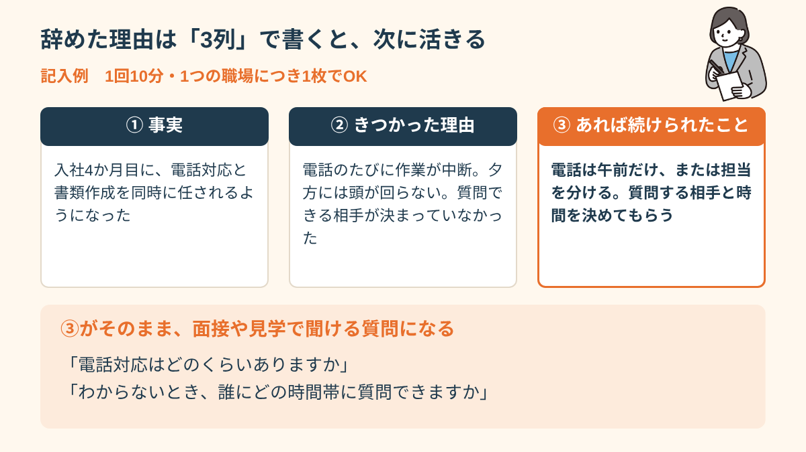
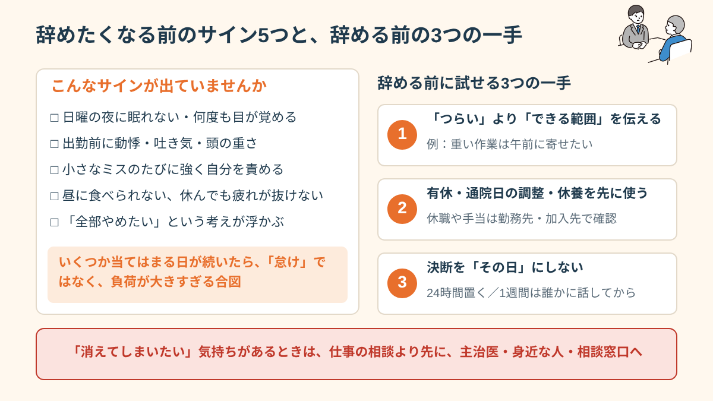
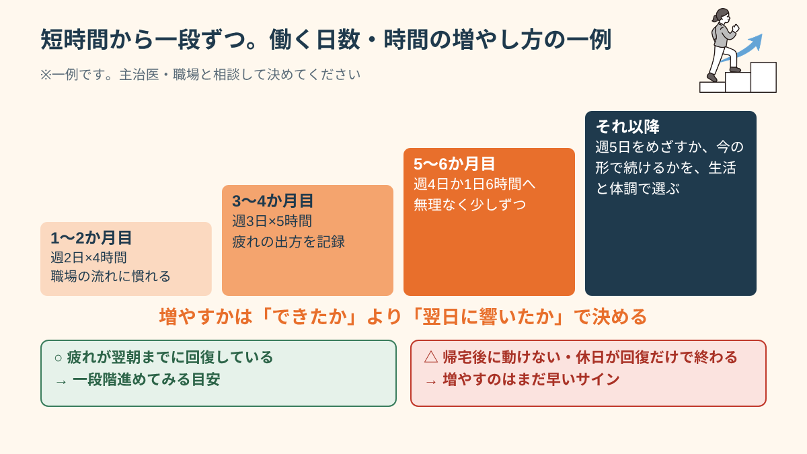
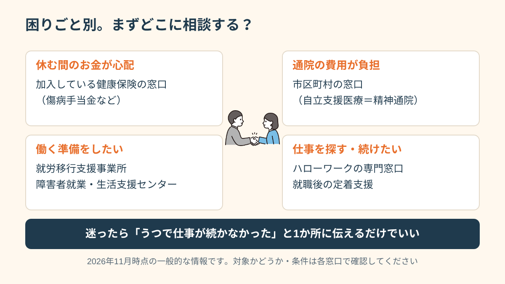

「続かない」のはなぜか。パターンを知ることが最初の一歩
うつを持ちながら仕事が続かない方には、いくつかの共通したパターンがあります。最も多いのは「症状が落ち着いたと感じた時点で、回復を過大評価してしまう」ことです。「もう大丈夫だ」と思ってフルタイムで就職し、3ヶ月で限界を迎えてしまう。このサイクルを繰り返してきた方は少なくありません。
他によくあるパターンとして、「職場環境があっていない（騒音・人間関係・業務量）のに我慢してしまう」「調子が悪くなっても誰にも言えない」「ストレスに気づかないまま積み上がってしまう」なども挙げられます。「続かない」理由を知ることが、次に続けるための設計の出発点になります。
たとえば、こんな流れです。4月に入社して、最初の1か月は「迷惑をかけたくない」と周りより早く出社する。5月には頼まれた仕事を断れず、残業が週に何日も続く。6月ごろから日曜の夜に眠れなくなり、7月には朝、布団から出られない日が出てくる。欠勤の連絡を入れるたびに申し訳なさが積み上がり、8月に「もう無理だ」と退職を決める。こうして振り返ると、辞める直前の1日だけが問題なのではなく、数か月かけて少しずつ限界に近づいていたことが見えてきます。

「3か月で辞めた」「半年もたなかった」という言い方をする方は多いのですが、期間そのものよりも、「どの時期に何が起きていたか」を見るほうが役に立ちます。働き始めの1〜2か月は緊張で張りつめていて、疲れに気づきにくいものです。気が緩む3か月前後に、たまっていた疲れが一気に出ることもあります。これは意志の問題ではなく、体と心の使い方の問題として整理できます。
もうひとつ、見落とされやすいのが「調子がいい時期ほど、仕事を引き受けすぎる」という動きです。うつの症状が軽くなると、遅れを取り戻したい気持ちが強くなり、週5日・残業ありの働き方に一気に戻してしまうことがあります。いったん立て直せても、元のペースに戻したところでまた限界が来る。このくり返しに心当たりがあるなら、それはあなたの性格ではなく、「回復の途中の働き方の設計」を一度も一緒に組み直せていなかっただけかもしれません。
「なぜ辞めたのか」を正直に言語化する
「また辞めてしまった」と感じたとき、多くの方が「自分がダメだから」という結論に飛びつきます。しかし、辞めた理由を丁寧に掘り下げると、実は「環境的な要因」が大きいことがほとんどです。人間関係、業務量、通勤時間、職場の騒音レベル、フィードバックの不足、評価されない感覚。これらは「環境の問題」であり、「あなたの能力の問題」ではありません。
次に働く職場を選ぶ前に、「前の職場でなぜ辞めたか」を具体的に書き出してみることをお勧めします。「人間関係」という大きな理由より、「Aさんの話し方が毎回怖かった」「報告のやり取りが多すぎて消耗した」という具体的な理由の方が、次の職場選びに活きます。
書き出すときは、「事実」「きつかった理由」「あれば続けられたこと」の3つに分けると整理しやすくなります。例を挙げます。
事実：入社4か月目に、電話対応と書類作成を同時に任されるようになった。
きつかった理由：電話が鳴るたびに作業が中断され、夕方には頭が回らなくなった。質問できる相手が決まっていなかった。
あれば続けられたこと：電話は午前だけ、あるいは担当を分けてもらう。質問する相手と時間を決めてもらう。
こうして書くと、「自分が弱かった」ではなく、「電話と書類の同時進行」「質問先が決まっていない」という職場の条件が見えてきます。条件が見えれば、次の職場選びで確認できる質問になります。「電話対応は多いですか」「質問は誰にどの時間帯にできますか」と、面接や見学のときに聞けるからです。

書き出しは、1回で完璧にしなくて大丈夫です。つらい記憶を思い出す作業なので、体調が落ちる日は無理をしないでください。1回10分、1つの職場につき1枚と決めて、少しずつ進めるくらいがちょうどよいです。1人で書くのがしんどい場合は、支援者と一緒に、話しながら埋めていく方法もあります。
辞めたくなる前に出ているサインと、辞める前にできる3つの一手
辞めると決めた日の前には、たいてい小さなサインが出ています。人によって違いますが、次のようなものがよく挙げられます。
- 日曜の夜になると、眠れない、または何度も目が覚める
- 出勤前に、動悸や吐き気、頭の重さが出る日が増えた
- 以前なら気にならなかった小さなミスが続き、そのたびに強く自分を責める
- 昼休みに食べられない、休んでも疲れが抜けない
- 「このまま消えてしまいたい」「全部やめたい」という考えが頭に浮かぶ
これらは「怠けている」サインではなく、体と心が「負荷が大きすぎる」と知らせているサインとして受け取るほうが安全です。特に最後の項目のように、強いつらさや消えてしまいたい気持ちが出ているときは、仕事の相談より先に、すぐ主治医や身近な人、地域の相談窓口に連絡してください。1人で抱えない、というのがいちばん大事な一手です。
「毎週日曜の夜に涙が出てきて、月曜の朝は駅のホームで足が止まった。辞めるしかないと思い詰めて退職届を書いたけれど、書いたあとに主治医に話したら、『辞める前に、勤務を週3日にできないか上司に聞いてみませんか』と言われて。聞いてみたら、意外と通った。」
辞めたい気持ちが強まったとき、辞めることだけが選択肢のように見えてしまうことがあります。実際には、辞める前に試せる手がいくつかあります。
一手目：「しんどい」ではなく「できる範囲」を具体的に伝える
上司に「つらいです」とだけ伝えても、何をどう変えればいいのか伝わりにくく、「頑張って」と返されて終わることがあります。「午後は集中が切れるので、重い作業は午前に寄せたい」「電話対応は週の半分にしてもらえると続けやすい」のように、変えてほしいことと、それでできることをセットで伝えるほうが、相手も動きやすくなります。
二手目：休み方・通院の調整を先に使う
退職の前に、年次有給休暇の取得、通院日の勤務調整、数日〜数週間の休養ができないかを確認します。休職制度や、病気で休んだときの手当（傷病手当金など）は、勤務先や加入している保険によって条件が違います。まずは就業規則や人事担当、加入先の窓口で確認しましょう。
三手目：辞める決断を「その日」にしない
強くつらい日の判断は、体調の影響を受けやすいものです。退職を決めたい気持ちが出たら、「24時間置く」「1週間は主治医か支援者に相談してから決める」といった自分用のルールをつくっておくと、後悔の少ない選択につながりやすくなります。それでも辞めると決めた場合は、次の職場で同じことを繰り返さないために、前の項で触れた書き出しを一緒に作っておくとよいでしょう。

主治医との連携。「働ける状態か」の判断を一人でしない
うつの回復過程は、波があります。「調子がいい日が続いている」「薬が減った」という感覚だけで「もう働けるはず」と判断するのは、リスクが高いです。うつからの就労に向けた判断は、できれば主治医と相談したうえで行うことをお勧めします。
主治医に「そろそろ就労を考えています」と伝えることで、「今の状態で何時間・何日働けそうか」「どんな環境が適切か」についての医学的な視点を得ることができます。就労移行支援を使う場合も、主治医の意見書が求められることがあります。
診察で何を話せばいいか迷う方は、次の3点をメモにして持っていくと伝わりやすくなります。1つ目は、ここ2〜4週間の睡眠・食欲・朝の起きやすさ。2つ目は、働いていたときに特にきつかった場面（時間帯・業務・人間関係）。3つ目は、働きたい時間や日数の希望と、不安に感じている点です。診察時間は限られているため、メモを渡すだけでも、状況が正確に伝わります。
聞いてみるとよい質問の例もあります。「今の状態だと、週に何日・1日何時間くらいなら現実的ですか」「就職したあと、無理をしているサインはどんなものですか」「薬の調整が必要になりそうな時期はありますか」。主治医の答えが、「今は準備期間を取りましょう」というものであっても、それは「働けない」という判断ではなく、「段階を踏む」ための助言として受け取れます。
なお、主治医に伝えにくいと感じる場合は、支援者が同席したり、本人の了解のもと状況を文書でまとめて主治医に渡したりすることで、診察がスムーズになることもあります。遠慮せず「就労のことを相談したいので少し時間をください」と最初に伝えておくと、診察の中で扱ってもらいやすくなります。
「5回転職を繰り返して、やっと支援機関に相談した。そこで初めて『うつの回復と就労可能な状態は別物』と聞いて、目が覚めた。それまでは薬が減ったら働けると思い込んでいた。」
「短時間・週数日」から始めることの意味
うつからの就労では、「フルタイムで頑張る」より「短時間から無理なく始める」アプローチが、長期的には続くことが多いです。週3日・1日4〜5時間という形でスタートし、3〜6ヶ月かけて徐々に時間・日数を増やす。この「段階的移行」は、体が職場環境に慣れるための時間を作ります。
「短時間から始めると給与が少ない」という現実はあります。しかし、短時間で続けながら安定してきたときに増やす方が、フルタイムで無理して3ヶ月で辞めることを繰り返すより、長い目で見てトータルの収入も安定します。
段階の目安を一例として挙げます（必ずしもこのとおりにする必要はなく、主治医・職場と相談して決めてください）。
- 1〜2か月目：週2日・1日4時間程度。仕事の流れと職場の人に慣れることを優先する
- 3〜4か月目：週3日・1日5時間前後。疲れの出方（翌日に残るか）を記録しながら調整する
- 5〜6か月目：週4日、または1日6時間へ。無理がなければ少しずつ増やす
- それ以降：週5日・フルタイムを目標にするか、今の働き方で続けるかを、生活と体調から決める
増やすかどうかを判断するときは、「できたかどうか」より「翌日にどれだけ響いたか」を見てください。出勤できていても、帰宅後に動けなくなる、休日が回復だけで終わる、という状態が続くなら、増やすのは早いサインかもしれません。逆に、疲れが翌朝までに回復しているなら、一段階進めてみる目安になります。

また、「フルタイムに戻さないといけない」と思い込む必要もありません。週3〜4日のまま長く働き続けている方もいます。収入や生活のことは気になりますが、続けられる形を見つけることが、結果的にいちばん安定につながることが多いです。働き方を決めるときは、生活費の見通しも含めて、支援機関で一緒に整理することができます。
続けやすい働き方を探すときに知っておきたい制度と相談先（2026年11月時点）
「続かない」を繰り返してきた方ほど、働き方を決める前に、使える仕組みを一度確認しておくと安心です。ここでは一般的な内容をまとめます。制度は変更されることがあり、自治体や加入している保険によって条件が異なります。最新の情報と、自分が対象になるかどうかは、必ず窓口で確認してください。
病気で休む・通院するときの仕組み
会社の健康保険に加入している方は、病気やけがで働けず給与が支払われないとき、傷病手当金を受けられる場合があります。一般に、連続する3日間の休みのあと、4日目以降が対象となり、支給期間には上限があります。条件は細かく決まっているため、加入先の健康保険の窓口で確認しましょう。通院の医療費については、自立支援医療（精神通院医療）を使うと、自己負担が軽くなる場合があります。申請は市区町村の窓口です。
障害者手帳と障害者雇用
精神障害者保健福祉手帳は、診断の状況などの条件を満たすと申請でき、有効期間があるため更新が必要です。手帳があると、企業の障害者雇用枠への応募や、各種の支援を受けやすくなります。障害者雇用では、短時間勤務や通院への配慮など、働き方を相談しながら決められることがあります。ただし、手帳を取るかどうかは本人が決めることで、必ず取らなければならないものではありません。迷う場合は、主治医や支援者に、メリットと負担を聞いてから考えて大丈夫です。
就職前後に使える相談先
- 就労移行支援事業所：一般企業への就職を目指す人が、通所しながら訓練や就職活動の準備をする場所。利用できる期間は原則として決まっています。
- ハローワークの専門窓口：障害のある方向けの求人紹介や、職業相談を受けられます。
- 障害者就業・生活支援センター：仕事と生活の両方について、就職前後の相談ができます。
- 就職後の定着支援：就職後も、職場との調整や悩み相談を受けられる仕組みがあります。
どこに相談すればいいか分からないときは、まず1か所に「うつで仕事が続かなかった経験がある」と伝えることから始めてください。その一言で、必要な窓口へつないでもらえることが多いです。

「辞めた」ことは経験であって、失敗ではない
「また辞めてしまった」という自己嫌悪は、とても消耗します。しかし、一度立ち止まって考えてみると、辞めるたびに「合わない環境」「耐えられない要因」が少しずつ明確になっているはずです。それは失敗ではなく、「自分に合う働き方を探すプロセス」です。
就労に関する「失敗経験」は、支援者にとって非常に重要な情報です。「どんな職場で何がきつかったか」「何があれば続けられたか」。これらを支援者に伝えることで、次の職場選びの精度が大きく上がります。「また辞めてしまった」と感じているなら、その経験を活かす場所に来てください。
面接や面談で「前の職場はなぜ辞めましたか」と聞かれたときも、書き出しが役に立ちます。たとえば「業務量が増えたときに、早めに相談する習慣がなく、体調を崩して退職しました。いまは主治医と相談しながら、週3日から始めたいと考えています。困ったときは早めに伝えるようにしています」のように、「事実」「学び」「今の条件」を短く伝えれば十分です。隠す必要も、全部を詳しく説明する必要もありません。
- 「続かない」のは意志の弱さではなく、環境や回復の見積もり違いが多い
- 辞めた理由を具体的に言語化することが次の設計の出発点
- 「働ける状態か」の判断を一人でしない。主治医・支援者と共有する
- 短時間・週数日から始める段階的アプローチが長く続くことが多い
- 「辞めた経験」は支援者にとって重要な情報。恥じなくていい
- 辞めたくなる前のサインに気づいたら、辞める前に「条件の相談」と「休み方の確認」を試す
- 制度や相談先は、困りごとを1つ伝えるところから使える